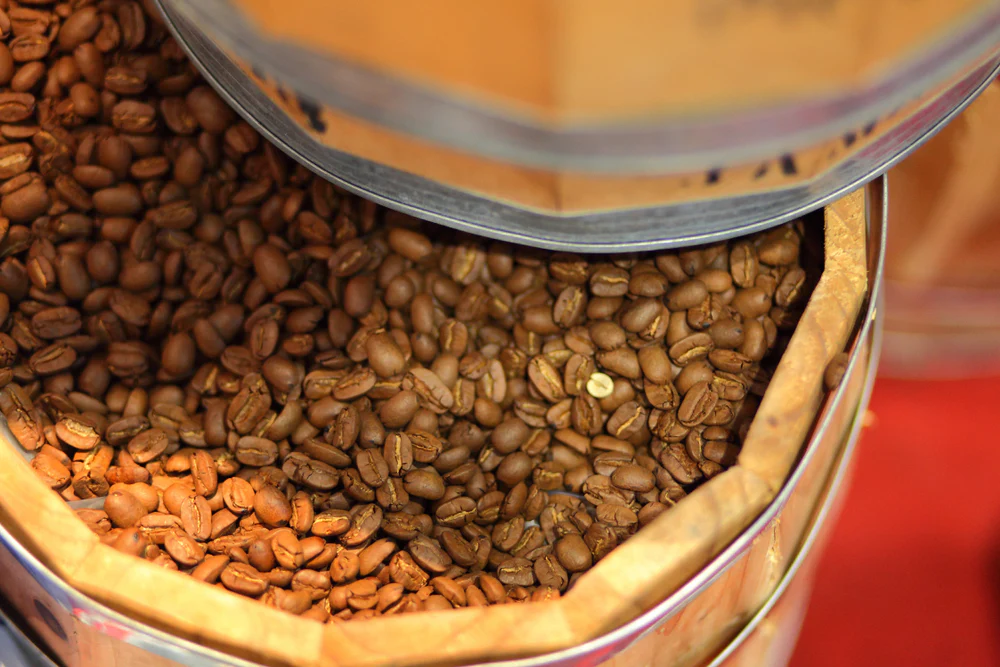

Every barrel in our cellar is a unique and somewhat unpredictable collaborator. When we fill a used bourbon barrel with our Imperial Stout, we are entering into a two-year partnership with a piece of wood that has its own history, its own residual chemistry, and its own microbiome. The beer we pull from that barrel when we finally tap it will be fundamentally different from anything that went in. The question is whether "different" means "transcendent" or "catastrophically wrong."
What the Oak Actually Does
There is a common misconception that oak barrels "add flavour" to beer the way a spice addition might. This is an oversimplification. Oak acts primarily as a semi-permeable membrane — it allows microscopic amounts of oxygen to enter the barrel, and it is this slow, controlled oxidation that is the primary driver of flavour transformation in aged beer.
The wood compounds that directly migrate into the beer — vanillin (vanilla), lactones (coconut, oak), and tannins (astringency, structure) — contribute real, detectable flavours. But they are secondary to the effect of oxygen exposure. Oxygen allows the beer to round out harsh fusel alcohols, develop complex ester notes, and knit together disparate flavour elements in a way that fresh beer simply cannot replicate.
"The oak doesn't add flavour — it acts as a gateway for oxygen, and oxygen is the real flavour architect." — Hari Kiran
The Previous Life of the Barrel
The most important variable in barrel aging is not the wood species, not the toast level, and not even the beer you fill it with. It is the previous liquid that occupied the barrel. A barrel that once held Kentucky straight bourbon will carry residual ethanol, caramel, vanilla, and charred oak compounds that will leach into anything that follows. A sherry butt brings dried fruit, oxidative nuttiness, and sweetness. A Islay Scotch cask brings the most challenging bedfellow of all: medicinal, maritime, and smoky compounds that either harmonise brilliantly or utterly dominate.

The Angel's Share
Every barrel loses liquid to evaporation through its staves — roughly 2–4% of volume per year in our California cellar. This evaporation is collectively known as the "angel's share," a distillery term adopted gratefully by brewers. The loss rate is higher in warmer, drier conditions, which makes California barrel aging quite different from the same process in, say, a Scottish distillery cellar.
The practical consequence is that a 60-litre barrel filled in January 2023 will yield approximately 54–56 litres when pulled in January 2025. Some of that volume loss is liquid; some of it is alcohol, since ethanol evaporates faster than water, slightly reducing ABV over extended aging periods. This is the opposite of the distillation process, where concentration increases over time.
Our Current Barrel Inventory
- 12 × Former bourbon barrels (Batch 22 Imperial Stout — 18 months)
- 6 × Former oloroso sherry butts (Batch 19 Barleywine — 24 months)
- 4 × Former Islay Scotch casks (Experimental — 8 months, on watch)
- 8 × Virgin American oak (Batch 24 Wild Ale — 12 months)
- 3 × Ex-rum barrels (Batch 26 Porter — 6 months, new intake)
When It Goes Wrong
Not every barrel produces a transcendent result. Our failure rate over the last four years is approximately 18% — roughly one in five barrels is either drained silently or blended in such small quantities that its faults are masked. The most common failure mode is acetic acid development: a vinegar-like sharpness that can develop when oxygen exposure is too high and the beer's alcohol content is too low to suppress the acetobacter bacteria responsible. Below approximately 8% ABV, barrel-aged beers become genuinely risky.
We have also experienced three cases of "woody astringency overload" — where particularly porous or heavily charred barrels have contributed so much tannic extraction that the beer became uncomfortably drying and bitter in a wholly unpleasant way. The solution was immediate: those barrels were retired and replaced.
The Moment of Truth
When we finally sample a barrel for the first time, after months of disciplined waiting and resisting the urge to pull the bung every fortnight, there is a genuine moment of collective breath-holding in the cellar. The colour is usually deeper, sometimes dramatically so. The aroma hits you before you even get the glass to your nose. That first sip is either the beginning of something extraordinary, or a quiet conversation about blending options. There is no middle ground in barrel aging. That is exactly why we do it.